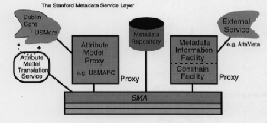

<!DOCTYPE HTML PUBLIC "-//W3C//DTD HTML 3.2 Final//EN">
<!-- Converted with jLaTeX2HTML 98.1p1 release (March 2nd, 1998) + JP patch 2.0 (March 16th, 1998)
patched by Kenshi Muto (mutou@three-a.co.jp), Three-A Systems,Co.,Ltd.
LaTeX2HTML 98.1p1 release (March 2nd, 1998)
originally by Nikos Drakos (nikos@cbl.leeds.ac.uk), CBLU, University of Leeds
* revised and updated by:  Marcus Hennecke, Ross Moore, Herb Swan
* with significant contributions from:
  Jens Lippmann, Marek Rouchal, Martin Wilck and others  -->
<HTML>
<HEAD>
<TITLE>SMA : Managing Metadata</TITLE>
<META NAME="description" CONTENT="SMA : Managing Metadata">
<META NAME="keywords" CONTENT="infobus_service">
<META NAME="resource-type" CONTENT="document">
<META NAME="distribution" CONTENT="global">
<META HTTP-EQUIV="Content-Type" CONTENT="text/html; charset=iso-2022-jp">
<LINK REL="STYLESHEET" HREF="infobus_service.css">
<LINK REL="next" HREF="node15.html">
<LINK REL="previous" HREF="node3.html">
<LINK REL="up" HREF="infobus_service.html">
<LINK REL="next" HREF="node9.html">
</HEAD>
<BODY >
<!-- Navigation Panel -->
<A NAME="tex2html107"
 HREF="node9.html">
</A> 
<A NAME="tex2html105"
 HREF="infobus_service.html">
</A> 
<A NAME="tex2html99"
 HREF="node7.html">
</A>   
<BR>
<STRONG> Next:</STRONG> <A NAME="tex2html108"
 HREF="node9.html">$B%"%H%j%S%e!<%H%b%G%k%W%m%/%7(B</A>
<STRONG> Up:</STRONG> <A NAME="tex2html106"
 HREF="infobus_service.html">$BL5Bj(B</A>
<STRONG> Previous:</STRONG> <A NAME="tex2html100"
 HREF="node7.html">$B<BAu$N>u67(B</A>
<BR>
<BR>
<!-- End of Navigation Panel -->

<H1><A NAME="SECTION00040000000000000000">
SMA : Managing Metadata</A>
</H1>

<P>
SMA (Stanford Metadata Architecture)$B$O!"(B
InfoBus$B%5!<%S%9$NC5:w!"(B
$B%5!<%S%9$X$N8!:w<ALd!"(B
$BJV$C$F$/$k9=B$2=$5$l$?8!:w7k2L$KI,MW$J%a%?%G!<%?$N8r49$H4IM}$N$?$a$N(B
$B%5!<%S%9AX$rDj5A$7$F$$$k!#(B
$B$3$N%"!<%-%F%/%A%c$,8=$l$k$^$G$O(B
InfoBus$B$G$O%5!<%S%9Kh$N%a%?%G!<%?$K(B
$BHs8_49@-!JNc$($P(Bauthor$B$H(Bcreator$B$J$I!K$,@8$8$F$$$?!#(B

<P>
SMA$B$OFC$K(B2$B<oN`$N%a%?%G!<%?$NAj8_1?MQ@-$r9MN8$7$F$$$k!#(B
<DL COMPACT>
<DT>1.
<DD>$B8!:w%5!<%S%9$+$i<hF@$5$l$k%*%V%8%'%/%H!JJ8=q$J$I!K$r5-=R$7$?%a%?%G!<%?(B
<DT>2.
<DD>$B%5!<%S%9<+BN$r5-=R$7$?%a%?%G!<%?(B
</DL>
<P>
SMA$B$O(B4$B$D$N4pK\%/%i%9$+$i@.$C$F$$$k!J?^(B<A HREF="node8.html#sma">4</A>$B!K!#(B
<DL COMPACT>
<DT>1.
<DD>$B%"%H%j%S%e!<%H%b%G%k%W%m%/%7(B (Attribute Model Proxy)
<DT>2.
<DD>$B%"%H%j%S%e!<%H%b%G%kJQ49%5!<%S%9(B (Attribute Model Translator)
 <DT>3.
<DD>$B8!:w%W%m%/%7MQ$N%a%?%G!<%?5!G=(B (Metadata Facility for Search Proxy)
 <DT>4.
<DD>$B%a%?%G!<%?%l%]%8%H%j(B (Metadata Repository)
</DL>
<P>
<BR>
<DIV ALIGN="CENTER"><A NAME="sma">&#160;</A><A NAME="62">&#160;</A>
<TABLE WIDTH="50%">
<CAPTION><STRONG>$B?^(B 4:</STRONG>
$B%a%?%G!<%?%5!<%S%9AX(B</CAPTION>
<TR><TD></TD></TR>
</TABLE>
</DIV>
<BR>
<P>
<BR><HR>
<!-- Table of Child-Links -->
<A NAME="CHILD_LINKS">&#160;</A>
<UL>
<LI><A NAME="tex2html109"
 HREF="node9.html">$B%"%H%j%S%e!<%H%b%G%k%W%m%/%7(B</A>
<LI><A NAME="tex2html110"
 HREF="node10.html">$B%"%H%j%S%e!<%H%b%G%kJQ49%5!<%S%9(B</A>
<LI><A NAME="tex2html111"
 HREF="node11.html">$B8!:w%W%m%/%7MQ$N%a%?%G!<%?5!G=(B</A>
<LI><A NAME="tex2html112"
 HREF="node12.html">$B%a%?%G!<%?%l%]%8%H%j(B</A>
<LI><A NAME="tex2html113"
 HREF="node13.html">$B9M;!(B</A>
<LI><A NAME="tex2html114"
 HREF="node14.html">$B<BAu$N>u67(B</A>
</UL>
<!-- End of Table of Child-Links -->
<BR><HR>
<ADDRESS>
Masao Takaku
$BJ?@.(B11$BG/(B3$B7n(B12$BF|(B
</ADDRESS>
</BODY>
</HTML>